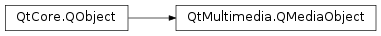

QMediaObject¶
Inherited by: QCamera, QAudioDecoder, QMediaPlayer, QRadioTuner
Synopsis¶
Functions¶
- def
addPropertyWatch(name) - def
availableMetaData() - def
isMetaDataAvailable() - def
metaData(key) - def
notifyInterval() - def
removePropertyWatch(name) - def
setNotifyInterval(milliSeconds)
Virtual functions¶
- def
availability() - def
bind(arg__1) - def
isAvailable() - def
service() - def
unbind(arg__1)
Signals¶
- def
availabilityChanged(availability) - def
availabilityChanged(available) - def
metaDataAvailableChanged(available) - def
metaDataChanged() - def
metaDataChanged(key, value) - def
notifyIntervalChanged(milliSeconds)
Detailed Description¶
The
PySide2.QtMultimedia.QMediaObjectclass provides a common base for multimedia objects.It provides some basic functionality that is common to other high level classes like
PySide2.QtMultimedia.QMediaPlayer,PySide2.QtMultimedia.QAudioDecoderandPySide2.QtMultimedia.QCamera, including availability and meta-data functionality, as well as functionality to connect media objects with support classes likePySide2.QtMultimedia.QMediaPlaylist.The higher level
PySide2.QtMultimedia.QMediaObjectderived classes provide the actual multimedia functionality, by internally using aPySide2.QtMultimedia.QMediaService. Each media object hosts aPySide2.QtMultimedia.QMediaServiceand uses thePySide2.QtMultimedia.QMediaControlinterfaces implemented by the service to implement its API. These controls can be accessed from the media object if necessary, but in general the useful functionality can be accessed from the higher level classes.Most media objects when constructed will request a new
PySide2.QtMultimedia.QMediaServiceinstance, but some likePySide2.QtMultimedia.QMediaRecorderandPySide2.QtMultimedia.QAudioRecorderwill share a service with another object.
-
class
PySide2.QtMultimedia.QMediaObject(parent, service)¶ Parameters: - service –
PySide2.QtMultimedia.QMediaService - parent –
PySide2.QtCore.QObject
Constructs a media object which uses the functionality provided by a media
service.The
parentis passed toPySide2.QtCore.QObject.This class is meant as a base class for multimedia objects so this constructor is protected.
- service –
-
PySide2.QtMultimedia.QMediaObject.addPropertyWatch(name)¶ Parameters: name – PySide2.QtCore.QByteArrayWatch the property
name. The property’s notify signal will be emitted once everynotifyIntervalmilliseconds.
-
PySide2.QtMultimedia.QMediaObject.availability()¶ Return type: PySide2.QtMultimedia.QMultimedia.AvailabilityStatusReturns the availability of the functionality offered by this object.
In some cases the functionality may not be available (for example, if the current operating system or platform does not provide the required functionality), or it may be temporarily unavailable (for example, audio playback during a phone call or similar).
-
PySide2.QtMultimedia.QMediaObject.availabilityChanged(available)¶ Parameters: available – PySide2.QtCore.bool
-
PySide2.QtMultimedia.QMediaObject.availabilityChanged(availability) Parameters: availability – PySide2.QtMultimedia.QMultimedia.AvailabilityStatus
-
PySide2.QtMultimedia.QMediaObject.availableMetaData()¶ Return type: list of strings Returns a list of keys there is meta-data available for.
-
PySide2.QtMultimedia.QMediaObject.bind(arg__1)¶ Parameters: arg__1 – PySide2.QtCore.QObjectReturn type: PySide2.QtCore.boolBind
objectto thisPySide2.QtMultimedia.QMediaObjectinstance.This method establishes a relationship between this media object and a helper object. The nature of the relationship depends on both parties. This methods returns true if the helper was successfully bound, false otherwise.
Most subclasses of
PySide2.QtMultimedia.QMediaObjectprovide more convenient functions that wrap this functionality, so this function rarely needs to be called directly.The object passed must implement the
PySide2.QtMultimedia.QMediaBindableInterfaceinterface.
-
PySide2.QtMultimedia.QMediaObject.isAvailable()¶ Return type: PySide2.QtCore.boolReturns true if the service is available for use.
-
PySide2.QtMultimedia.QMediaObject.isMetaDataAvailable()¶ Return type: PySide2.QtCore.boolReturns true if there is meta-data associated with this media object, else false.
-
PySide2.QtMultimedia.QMediaObject.metaData(key)¶ Parameters: key – unicode Return type: object Returns the value associated with a meta-data
key.See the list of predefined meta-data keys .
-
PySide2.QtMultimedia.QMediaObject.metaDataAvailableChanged(available)¶ Parameters: available – PySide2.QtCore.bool
-
PySide2.QtMultimedia.QMediaObject.metaDataChanged()¶
-
PySide2.QtMultimedia.QMediaObject.metaDataChanged(key, value) Parameters: - key – unicode
- value – object
-
PySide2.QtMultimedia.QMediaObject.notifyInterval()¶ Return type: PySide2.QtCore.int
-
PySide2.QtMultimedia.QMediaObject.notifyIntervalChanged(milliSeconds)¶ Parameters: milliSeconds – PySide2.QtCore.int
-
PySide2.QtMultimedia.QMediaObject.removePropertyWatch(name)¶ Parameters: name – PySide2.QtCore.QByteArrayRemove property
namefrom the list of properties whose changes are regularly signaled.
-
PySide2.QtMultimedia.QMediaObject.service()¶ Return type: PySide2.QtMultimedia.QMediaServiceReturns the media service that provides the functionality of this multimedia object.
-
PySide2.QtMultimedia.QMediaObject.setNotifyInterval(milliSeconds)¶ Parameters: milliSeconds – PySide2.QtCore.int
-
PySide2.QtMultimedia.QMediaObject.unbind(arg__1)¶ Parameters: arg__1 – PySide2.QtCore.QObjectDetach
objectfrom thePySide2.QtMultimedia.QMediaObjectinstance.Unbind the helper object from this media object. A warning will be generated if the object was not previously bound to this object.
© 2018 The Qt Company Ltd. Documentation contributions included herein are the copyrights of their respective owners. The documentation provided herein is licensed under the terms of the GNU Free Documentation License version 1.3 as published by the Free Software Foundation. Qt and respective logos are trademarks of The Qt Company Ltd. in Finland and/or other countries worldwide. All other trademarks are property of their respective owners.